—農ある暮らしをデザインする
自給農を軸に“田舎で生きる”を実践する半年講座 —
—農ある暮らしをデザインする
自給農を軸に“田舎で生きる”を実践する半年講座 —
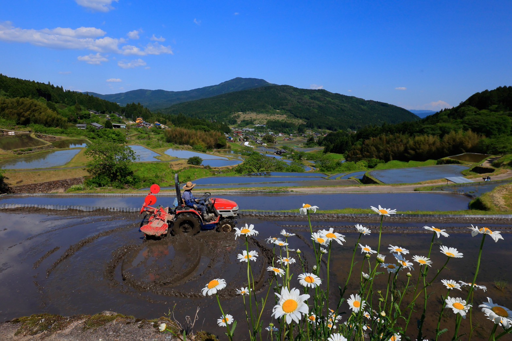
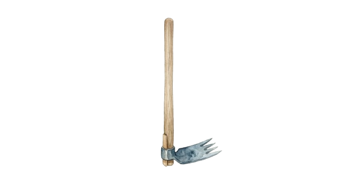
CONCEPT
「自分にとっての幸せのカタチとは」
これからの生き方、暮らし方をイメージしてみる。
例えば「田舎で暮らす」だったら・・・
少しでも野菜やお米をつくる。
地域の人と顔の見える関係でつながる。
小さななりわいを持つ。
家族と過ごす時間をとる。
移住に必要なお金を知る。
これら農ある暮らしの原型を、
中野方という風の谷で半年かけて学びます。
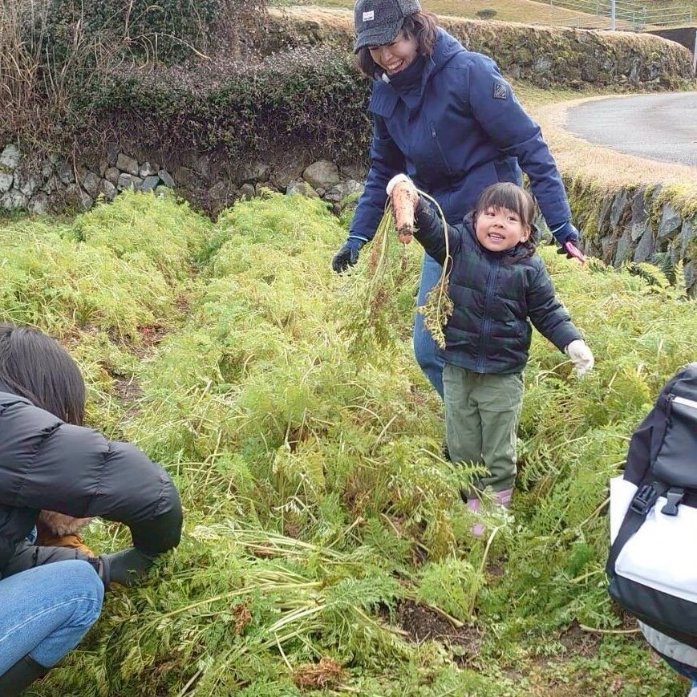
中野方での暮らしの実録
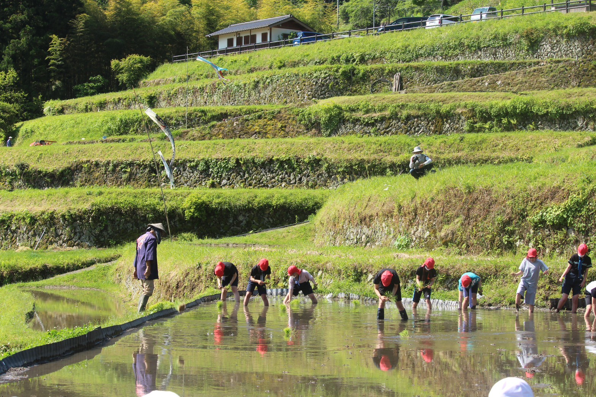
中野方、風の谷の風景
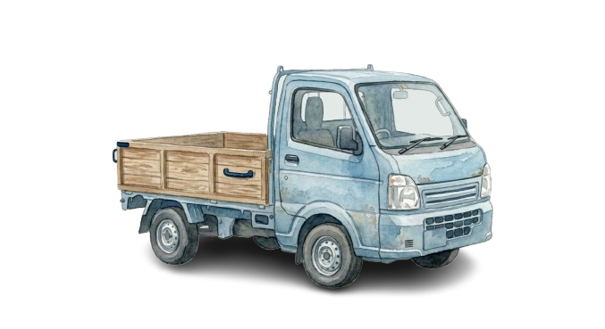
Where Life Takes Root
中野方町は、岐阜県恵那市の最北部にある、
人口1,350人ほどの小さな町です。
空き家が多いわけでも、便利な町でもありません。
ですが、子ども園や小学校をはじめ、郵便局や農協があり、
町の人が集まる喫茶店や商店もあり、
市街地まで20分で行けるほどほど田舎。
ご近所さんにおかずをおすそ分けして、
お互いを気遣う人のつながりがあったり、
暮らしの技が今も息づき、
生きるチカラを身につけることができる場所です。
田舎は自然が豊かで人が温かい場所。でもそれだけでは、暮らしは続きません。
仕事はどうする？収入は？ご近所との距離感は？自分は何をしたくて田舎に住みたいの？
憧れの前に、現実を知る。
この講座は、理想だけでなく、田舎で生きるための土台を体感する時間です。
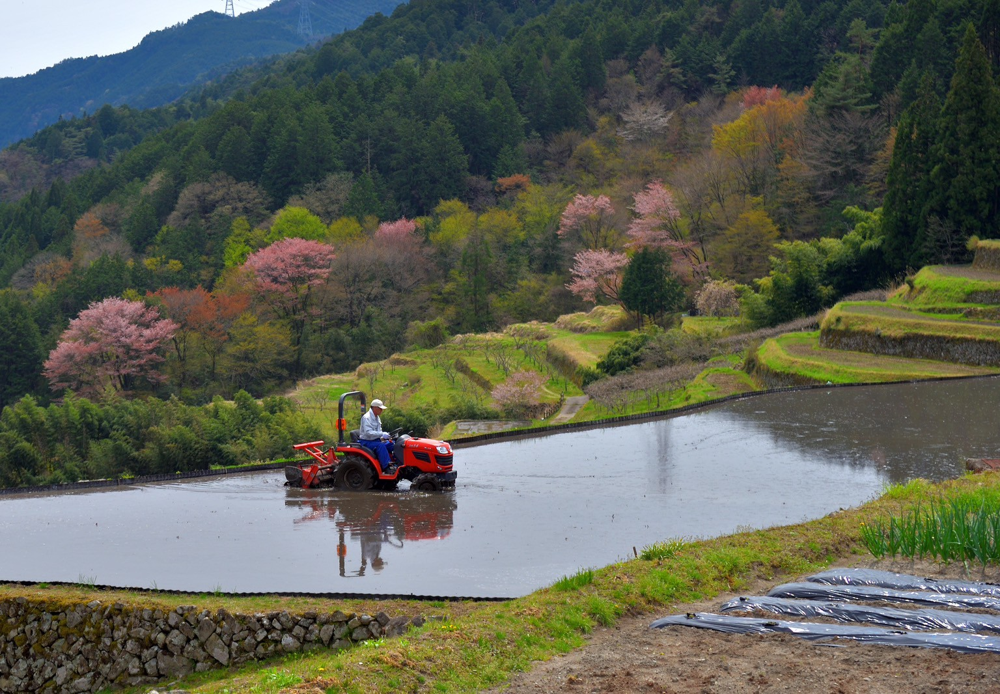
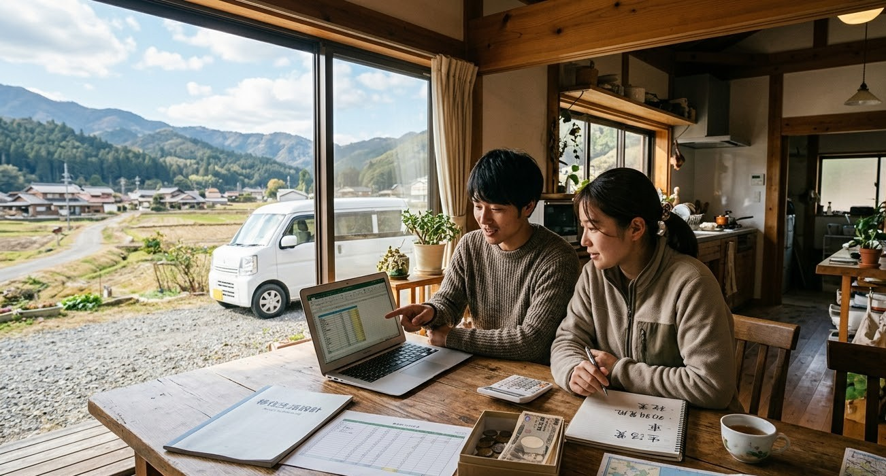
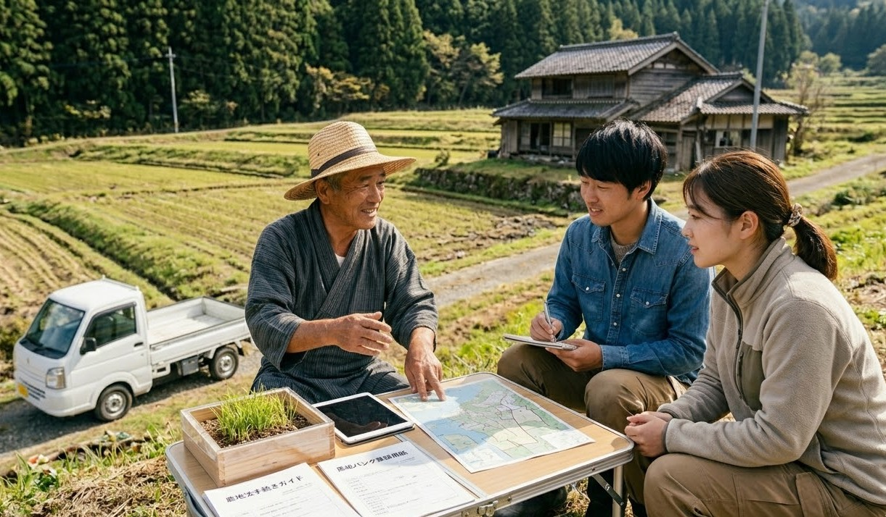
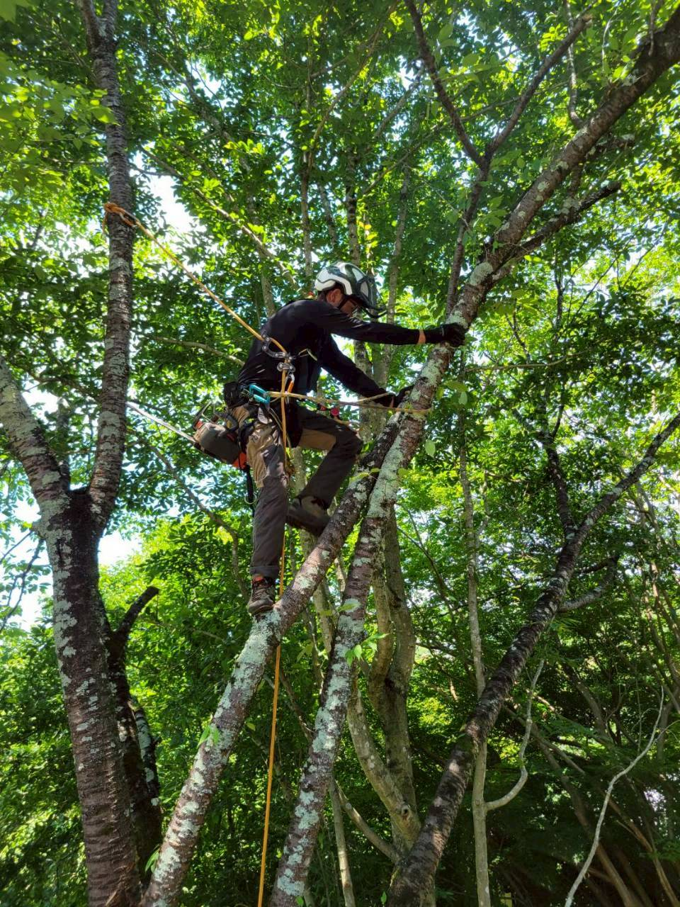
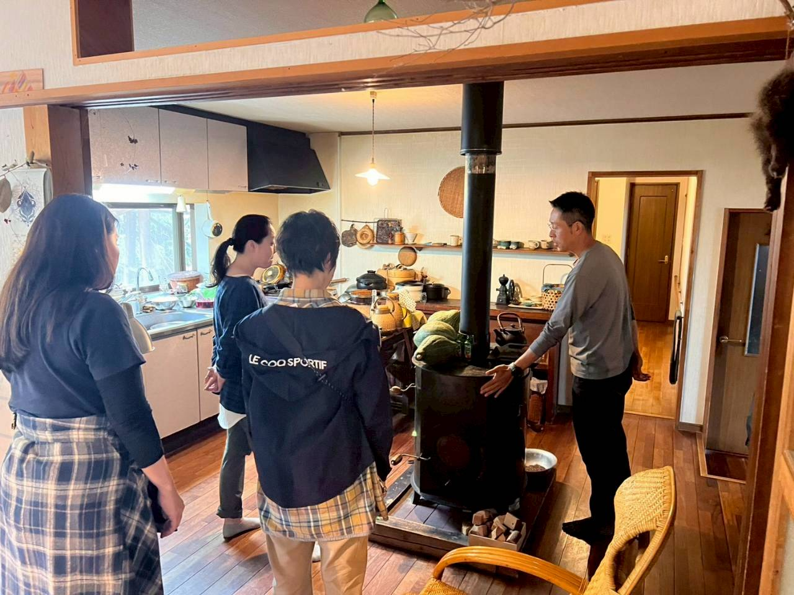
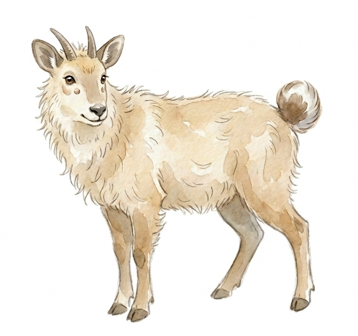
中野方町というこの場所には、長い年月をかけて守られてきた美しい棚田と、
それを支える人々の営みがあります。
しかし、理想だけでは田舎暮らしは続けられません。
私たちは、この地域の「美しさ」と同じくらい、
「大変さ」や「現実」も共有したいと考えました。
移住者、地元出身者、農の専門家。
異なる背景を持つ私たちがチームを組んだのは、
多角的な視点で「農ある暮らし」のプロトタイプを提案するためです。
個人ではなく地域全体であなたを迎え、半年間じっくりと、
地に足のついた未来を一緒に描いていきたい。
そんな想いで、この講座を運営しています。
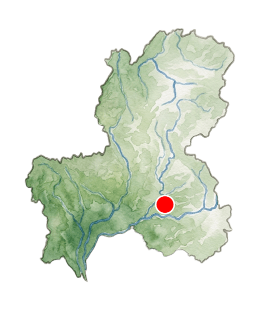
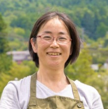
土に触れることが好きで、大学卒業後は会社員として働く一方で、陶芸に夢中になり、20
代は土と向き合う日々。
出産と子育てをきっかけに、「形に残る焼き物」から「形に残らない食や農」へと関心が移り、田舎での暮らしを求めて移住する。
移住後は恵那市ふるさと活性化協力隊として、福祉、異世代交流、森づくり、空き家対策、移住相談など、幅広い分野に携わった。
地域の方々とつながるきっかけになり支えていただいた。
今は「恩送り」をできることからしつつ、暮らしを育んでいる。
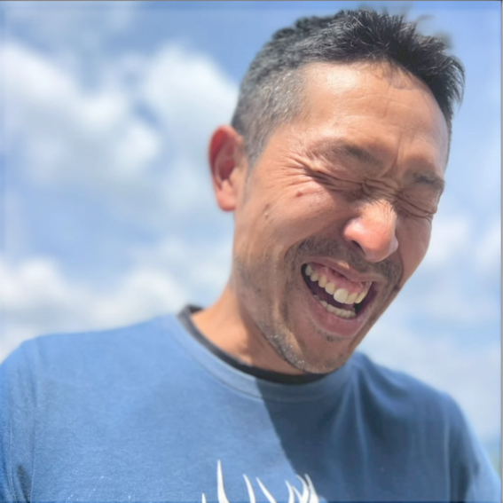
大学卒業後、外資系証券会社、商社、自然学校での勤務を経て、自然の中で暮らしたい」という思いから恵那市へ移住し、恵み自然農園を立ち上げました。
その後、中野方町へ二度目の移住。
現在は農家民宿を営みながら、移住推進、プレーパーク、コンポストコミュニティなど、人と地域をつなぐまちづくり活動を行っています。
また、樹上伐採や林業、狩猟など、山とともに生きることもライフワークとして取り組んでいます。
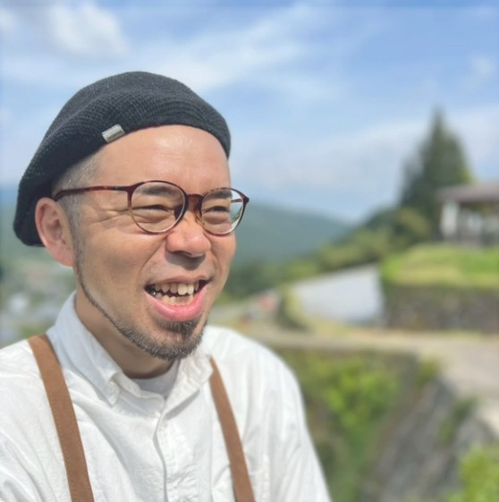
20代は東京や横浜のレストランで研鑽を積み､
30歳を機に起業を目指し東南アジアに渡る｡
タイとベトナムで日本料理店や居酒屋等を展開した後､ 食の世界に経済合理性をそのまま当てはめる事に疑問を持ち始め､ソーシャルビジネスに興味を持つ様になる｡
一次生産者にフォーカスした珈琲ロースター､ 有機農場経営などを経て､ 海外生まれの子ども達の故郷を日本に作るべく帰国｡
食による町おこしを目指し､ 2025年に恵那市中野方へ移住｡
食体験を通じた持続可能な地域の在り方を模索中。
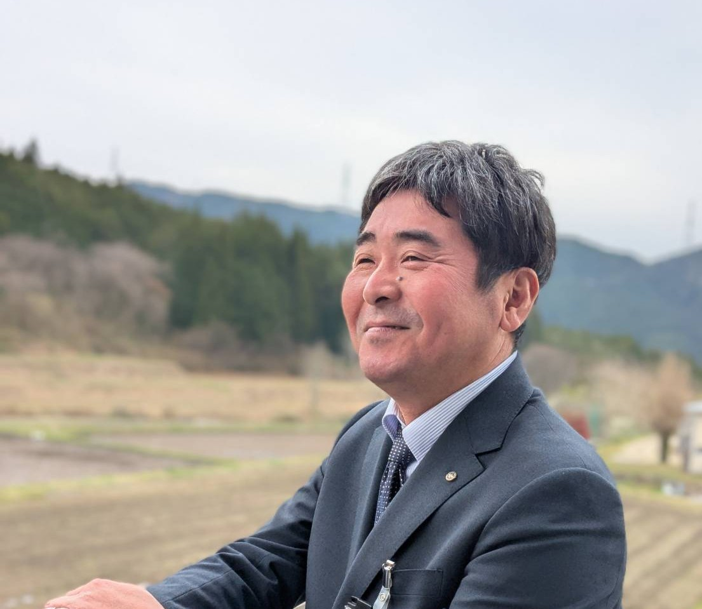
中野方町生まれ中野方町育ち。
恵那市役所に勤務して26年目。
入庁後は、農林課、笠置振興事務所、地域振興室、外郭団体出向、国土交通省観光庁出向、観光交流室、総合政策課、総合戦略・人口減少対策チーム、子育て支援課、建設課、高齢福祉課、財務課（課等は当時の名称）といった数々の転職？を経て令和8年度に中野方振興事務所に着任。
プライベートでは、中野方少年剣道クラブの指導員を務める。随時、部員募集中。
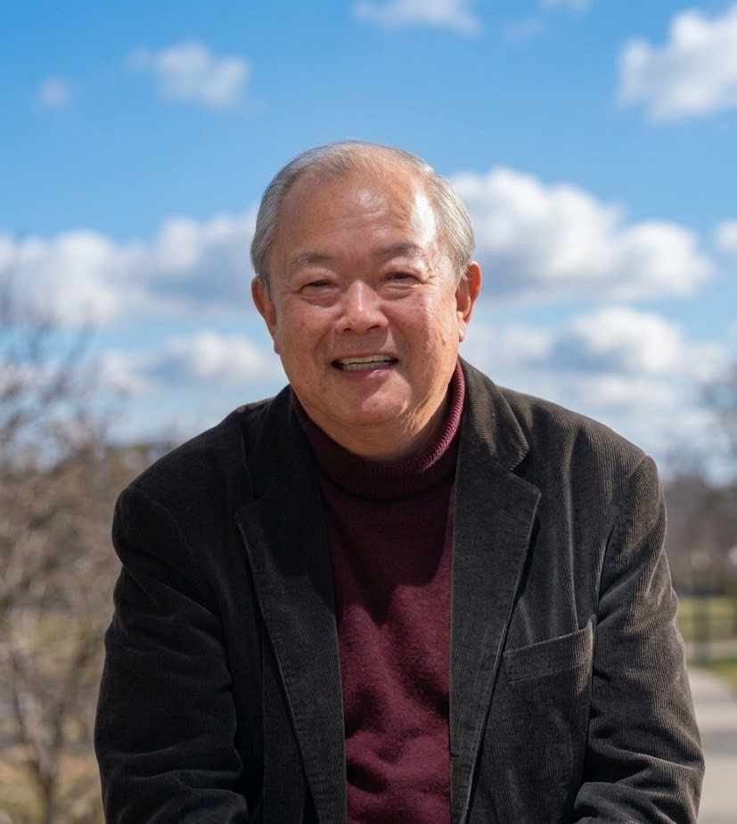
1952年生まれ。1980年東京農業大学大学院修了。国際協力機構専門家としてパラグアイに赴任後、長崎オランダ村、ハウステンボスの企画、経営に携わる。現在は、NPO法人共存の森ネットワーク理事長。全国の高校生100人が「森や海・川の名人」をたずねる「聞き書き甲子園」の事業や、各地で開催する地域人材育成のための「なりわい塾｣など、森林文化の教育・啓発を通して、人材の育成や地域づくりを手がける。岡山県真庭市では、1998年から、木質バイオマスを利用した地域内循環経済｢里山資本主義｣の推進に努める。明治の実業家・澁澤栄一の曾孫。農学博士。著書に「森と算盤」（大和書房）他
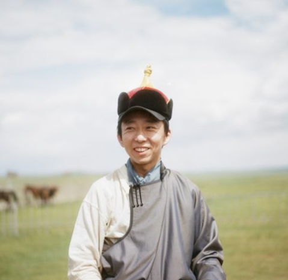
香川県出身。京都大学農学部卒業後、会社員を経てナリワイを発足。
仕事の民主化をテーマに、複数の生業（なりわい）を持つ自営業の実践と研究に取り組む。
小さい資金で始められて技が身に付き心身が鍛えられる仕事を〈ナリワイ〉と定義し、シェアアトリエや空き家の改修運営や「モンゴル武者修行」、「遊撃農家」などのナリワイを開発し自ら実践するほか「全国床張り協会」といったギルド的団体の運営を行う。著書に『ナリワイをつくる』『小商いのはじめかた』『フルサトをつくる』（ともに東京書籍）がある。
https://www.instagram.com/ninjamarugame/
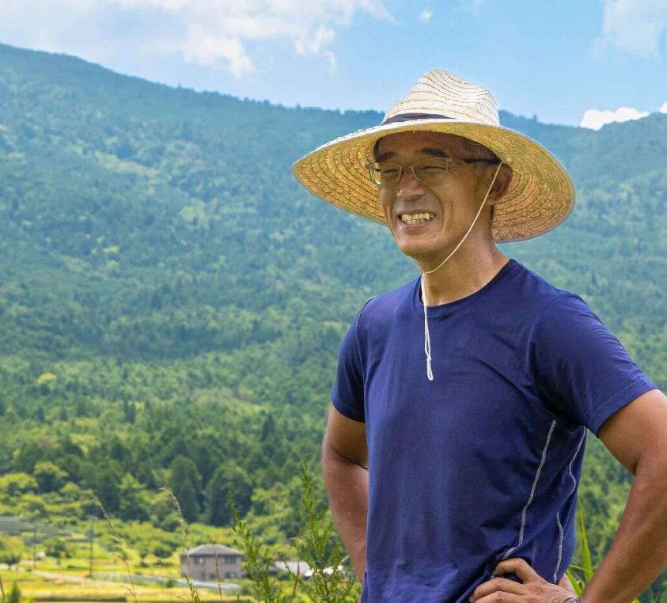
景観生態学を専門に、里山や水辺環境、文化的景観の保全に携わってきた。自然保護の現場で「人の暮らしのぬくもり」を見失う感覚を覚え、民俗学に傾倒。農山村を歩き、人と自然の関係を探り続ける中で、川口
由一氏の自然農に出会い、農薬に頼らない農の道を志す。大分での有機農業修行を経て、2012年より恵那市中野方に移住。田畑を“キャンパス”と捉え、感性・経験・技術のすべてを注ぎ込む「農の表現者」として、持続可能で人の営みと調和した農を実践している。
https://okasagefarm.com/
そんな方のための講座です。
岐阜県恵那市中野方町内
10名程度
通し参加優先／単発参加OK
通し 10,000円
同伴の子ども小学生以下無料／単発 3,500円
当企画の趣旨に賛同し、積極的に講座に参加できる方
自家用車名古屋から約1時間半／恵那ICから約20分
バスJR恵那駅から約30分
「お申し込みフォーム」よりご応募ください。